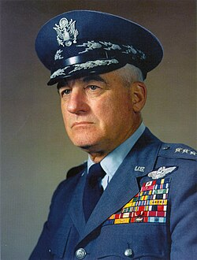

Nathan Twining
Air Force general, 1897 to 1982

An airman who rose from private to four-star general, Air Force chief of staff from 1953 to 1957, and chairman of the Joint Chiefs from 1957 to 1960. 1
On September 23, 1947, as head of Air Materiel Command, he wrote that "the phenomenon reported is something real and not visionary or fictitious," and recommended the study that became Project Sign. 1,2
Open in the interactive Watcher
Related
- The Twining memo
- Project Sign Recommended Project Sign
- Wright-Patterson AFB Air Materiel Command
Sources
- Nathan F. Twining Wikipedia
- General Nathan F. Twining and the Flying Disc Problem of 1947 Skeptical Inquirer, Mar. 2020